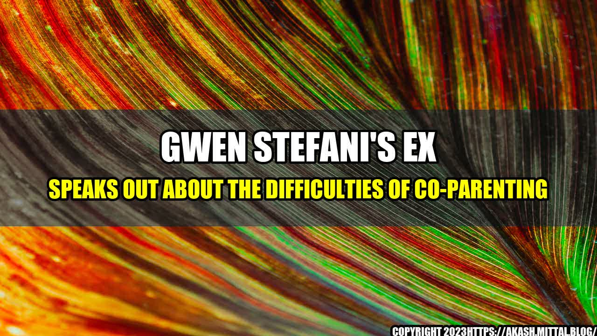

Gwen Stefani's Ex Speaks Out About the Difficulties of Co-Parenting
Co-parenting can be a challenging endeavor, even for celebrities like Gwen Stefani and her ex-husband Gavin Rossdale. In a recent interview with People magazine, Rossdale opened up about the ups and downs of co-parenting their three children: Kingston, Zuma, and Apollo.
Rossdale revealed that while he and Stefani share custody of their children, it can be difficult to navigate their schedules and responsibilities. "It's a balance," he said. "You have to be understanding of each other's situations and be there for the kids."
One of the biggest challenges of co-parenting, according to Rossdale, is maintaining open and honest communication with your ex-partner. "We both have the same goal, which is to make sure the kids are okay," he said. "We communicate as much as we can to make sure that everyone's on the same page."
Despite the difficulties, Rossdale remains committed to co-parenting with Stefani and providing their children with a stable and loving environment. "I hope that I provide a sense of calmness and stability, and that I'm there for them as a friend and a dad," he said. "I just want them to know that I love them and that I'm there for them."
Co-Parenting Challenges
While every co-parenting situation is unique, there are several challenges that are common among many families. Here are a few quantifiable examples:
- Scheduling conflicts: Coordinating your schedule with your ex-partner's can be a challenge, especially when there are multiple children involved. According to a study by the American Academy of Matrimonial Lawyers, 57% of respondents said that scheduling conflicts were the biggest challenge of co-parenting.
- Communication breakdowns: Misunderstandings and miscommunications can easily arise when co-parenting. This can make it difficult to make decisions about your children's education, healthcare, and other important matters. A survey by the National Parents Organization found that 43% of parents cited communication issues as the biggest challenge of co-parenting.
- Financial strain: Taking care of children can be expensive, and co-parenting can exacerbate financial difficulties. A study by the University of Michigan found that divorced parents who share custody spend an average of $6,900 more per year on their children than non-custodial parents.
and Case Studies
While it can be helpful to know about the common challenges of co-parenting, it can also be illuminating to hear about the experiences of individuals and families. Here are a few personal anecdotes and case studies:
Case Study 1: John and Sarah
John and Sarah have two children together, ages 10 and 12. They divorced three years ago and have been co-parenting ever since. At first, they struggled to communicate effectively and often found themselves arguing over small details. However, with the help of a therapist, they were able to develop a system for communicating that works for them. They now use a shared calendar and communicate primarily via email. "It's not always easy, but we both prioritize our children and try to keep the lines of communication open," says Sarah.
Personal Anecdote 1: Shannon
Shannon has a 5-year-old son with her ex-partner. Despite their agreement to co-parent, Shannon's ex is frequently late or absent when it comes to picking up their son or dropping him off. This has caused Shannon to rearrange her own schedule on numerous occasions and has created tension between her and her ex. "It's frustrating because it makes me feel like I can't rely on him," says Shannon.
Practical Tips for Successful Co-Parenting
If you're struggling with co-parenting, there are several practical tips that can help:
- Focus on your children: At the end of the day, co-parenting is all about creating a stable and loving environment for your children. Keep this in mind as you navigate the challenges of co-parenting.
- Communicate openly and honestly: Misunderstandings and miscommunications can easily arise when co-parenting, so it's important to communicate as openly and honestly as possible with your ex-partner.
- Be flexible and adaptable: Co-parenting requires a great deal of flexibility and adaptability. Be willing to compromise on minor issues and be open to trying new approaches.
- Get help when needed: If you're struggling with co-parenting, don't be afraid to seek help from a therapist or family counselor. These professionals can provide valuable insights and guidance.
Conclusion
Co-parenting can be a difficult and challenging endeavor, but it's also an important one for the well-being of your children. By communicating openly and honestly with your ex-partner, staying focused on your children, and being willing to get help when needed, you can successfully co-parent even in the face of adversity.
Curated by Team Akash.Mittal.Blog
Share on Twitter Share on LinkedIn